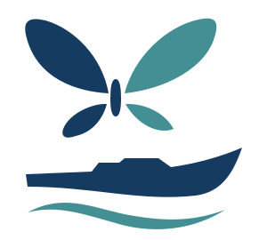
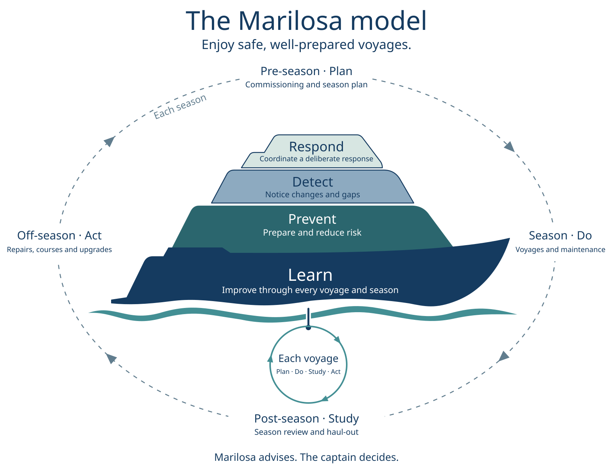

Calm advice for shorthanded crews
Marilosa is an advisory assistant for motor yachts run by a captain and one or two crew. It brings together what the boat, the forecast, the maintenance log and the crew already know, shows what it means for this crew today, and suggests options.
Marilosa advises. The captain decides.

The idea
Most of safety is decided before departure
Running a yacht asks a lot of a few people. The information they need lives in separate places: instruments, maintenance records, charts, forecasts, AIS and the crew’s own knowledge. Each tool does one job well; none asks what it all means for this crew, today.
Prepares
A short pre-departure check of crew, vessel, conditions, area and passage, so gaps show up at the dock rather than at sea.
Notices
Underway, it compares weather, traffic, technical trends and the health of its own data with the plan, and says plainly when information is missing or old.
Supports and learns
When something happens, a one-screen situation brief with options. After the voyage, a short debrief that makes the next one better.
recreational boating deaths were drownings
drowning victims were not wearing a life jacket
of deaths occurred where the operator had no boating instruction
US Coast Guard, Recreational Boating Statistics 2024. Preparation can change these factors.
The model
Four layers, one voyage
The model borrows the levels of prevention from healthcare. Learning is the hull that carries everything; most of the work happens at Prevent, where it costs least. On every layer the crew uses an established method, and Marilosa supports it.


Principles
Built to be trusted
- The captain is in command. Marilosa advises; it never steers, switches or sends commands.
- Nothing depends on it. Everything on board works with Marilosa switched off.
- Missing is never reassuring. Old or missing information is shown as old or missing.
- Facts are kept apart. What was observed, what is inferred and what may be the cause are shown separately.
- Options stay visible. Advice comes with alternatives and the reasons for them.
- Learning proposes. Changes to checklists and settings need the captain’s approval.
- Familiar at the helm. Designed following maritime interface conventions, with day, dusk and night modes.
- Your data stays on board. Shared only with consent; crew health answers never leave the tablet.
Sustainability
Good for the crew and the sea
Marilosa follows the UN Sustainable Development Goals with simple indicators, measured on board and owned by the crew.
Life jackets worn and serviced, man-overboard drills, beacons registered, crew trained.
Litres per nautical mile, time at economical speed, energy not from burning fuel.
Anchoring on sand rather than seagrass, correct discharge, a clean hull.
Maintenance on time and repair before replace, so equipment lasts longer.
Status
Where we are
Marilosa is a concept in development. The concept documentation covers principles, the model, intended purpose and safety behaviour. Version 1 is for privately used motor yachts with a small crew.
We welcome conversations with research partners, experienced skippers and crews interested in taking part in trials.
Contact details will follow shortly.
Next steps
- Validate the concept with skippers and long-distance crews.
- Build a minimal prototype of the pre-departure check and the situation brief.
- Test it on board in 2027.